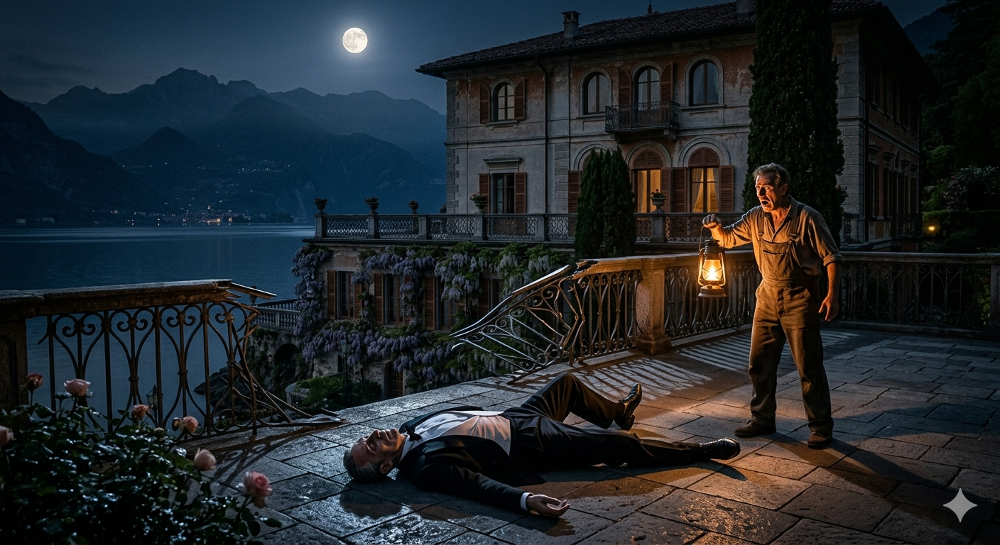
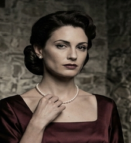
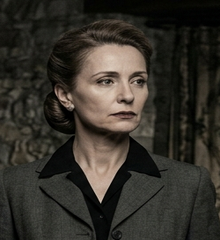
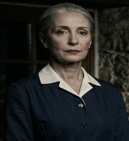
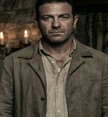
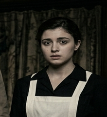

PERSONAGENS
Morte alla Villa Meridiana · Lago di Como · 14 de Junho de 1953
A VÍTIMA

FALECIDO
62 anos — Masculino — Industrial têxtil / Fundador da Ferrari Tessile S.p.A.
Fundador e presidente da Ferrari Tessile S.p.A., uma das maiores manufaturas de seda e algodão da Lombardia. Construiu o seu império desde os anos 1920 em parceria com Marco Conti — uma parceria que ele foi sistematicamente liquidando ao longo das décadas. Homem de poucos gestos e muitos cálculos, Carlo Ferrari chegou à Villa Meridiana no fim de semana de 14 de junho para resolver questões legais relativas à dissolução da empresa. Viúvo desde 1943 — a primeira esposa morreu durante a guerra. Casou pela segunda vez em 1949 com Giulia Marchetti. Encontrado morto às 22h42 na base da varanda da suite principal, após queda de sete metros.
Causa da morte: sob investigação do Commissario Bruno Lanza.
OS SUSPEITOS PRINCIPAIS
55 anos — Masculino — Sócio Fundador
Homem de meia-idade de porte sóbrio, cabelos escuros com grisalho nas têmporas, mãos de quem trabalhou com máquinas de tear. Sócio fundador da Ferrari Tessile S.p.A. há trinta anos — o arquiteto técnico da empresa, o homem que desenhou as primeiras máquinas, que treinou os operários, que acreditou durante décadas que o que construía era também seu. Presente na Villa Meridiana a convite — ou exigência — de Carlo, para discutir os termos finais da dissolução da empresa.
Traço Visível: Tenso e econômico nas palavras; uma raiva contida que aparece nos momentos de silêncio.

32 anos — Feminino — Esposa de Carlo
Mulher jovem de beleza evidente e postura que aprendeu a usar como proteção. Atriz de teatro amador antes de conhecer Carlo em 1948 — casaram em 1949. Os primeiros dois anos foram fáceis; depois Carlo tornou-se controlador, ciumento, ameaçador. Em maio de 1953, Carlo comunicou-lhe que pretendia o divórcio em termos que ela considerava ruinosos. Presente na villa como esposa — sem outra justificativa legal para estar ali.
Traço Visível: Composta e calculada; mas há algo que ela está monitorando com demasiada atenção.

44 anos — Feminino — Ex-Secretária Pessoal
Mulher de meia-idade de postura discreta e atenção aguçada, olhos que processam detalhes antes de falar. Secretária pessoal de Carlo Ferrari durante 16 anos — a pessoa que conhecia cada detalhe administrativo da Ferrari Tessile. Foi demitida quatro meses atrás, após descobrir documentos que comprometiam Carlo. Presente na Villa Meridiana a pedido de Carlo — que a convidou para uma conversa sobre termos de acordo de sigilo. Ela aceitar ou não aceitar é uma questão que ainda estava em aberto quando Carlo morreu.
Traço Visível: Extremamente cautelosa; mede cada palavra antes de dizê-la.
24 anos — Masculino — Sobrinho / Funcionário
Jovem de expressão aberta e nervosa, filho do irmão mais velho de Carlo (Matteo, falecido em 1942). Carlo criou-o nominalmente — escola privada, futuro garantido — mas nunca com afeto genuíno. Luca trabalha numa posição administrativa da Ferrari Tessile e esperava herdar uma parte da empresa. O que herdará, afinal, é uma questão que o testamento de Carlo teria respondido. Presente na villa por convocação familiar, tal como todos os demais.
Traço Visível: Ansioso e inquieto; evita o olhar direto quando perguntado sobre onde estava à noite.
AS TESTEMUNHAS

61 anos — Feminina — Governanta residente há 20 anos
Rosa conhece cada recanto da Villa Meridiana há duas décadas — desde antes de Carlo casar com Giulia. Discreta por profissão e por caráter, altamente observadora. Foi a primeira a gritar por socorro quando Aldo encontrou Carlo. Conhece os hábitos de todos que estiveram na villa e recorda movimentos e horários com precisão que surpreende.
49 anos — Masculino — Clínico Geral, Como
Médico de Como convocado para examinar o corpo e emitir o laudo inicial. Certificou a morte e examinou os ferimentos. Conhece a física da queda — a trajetória, a força horizontal, o ângulo de impacto. Reservado e preciso; hesita em especular além das suas descobertas técnicas até ser pressionado a fazê-lo.

38 anos — Masculino — Guarda e jardineiro da villa
Aldo mantém os terrenos e a segurança da Villa Meridiana. Foi ele quem encontrou o corpo de Carlo às 22h50 durante as rondas noturnas regulares. Conhece cada ferramenta do galpão, cada canto dos jardins, e inspecionou a varanda dois dias antes do crime. Observador direto, sem filtros.

23 anos — Feminina — Camareira residente
Jovem de uma família local, no seu primeiro ano na villa. Nervosa, ansiosa por agradar, com memória involuntária para detalhes que não deveria ter notado. Arrumava quartos no segundo andar na noite do crime. Ouviu e viu coisas — e está dividida entre a obrigação de falar e o desconforto de o fazer.
Nota do Commissario Bruno Lanza — Carabinieri di Como:
Todos os presentes na Villa Meridiana na noite de 14 de junho permanecem sob ordem de não abandonar o estabelecimento. O período de investigação é de 90 minutos. Qualquer informação relevante deve ser comunicada directamente ao Commissario antes do encerramento da sessão. — B. Lanza, Carabinieri di Como, Giugno 1953